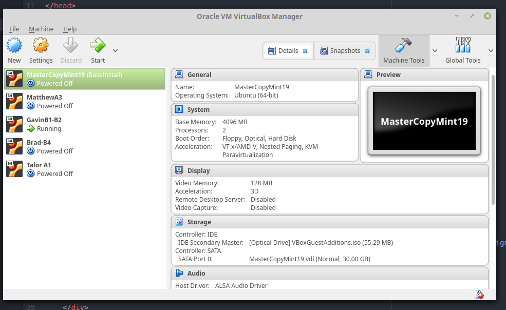
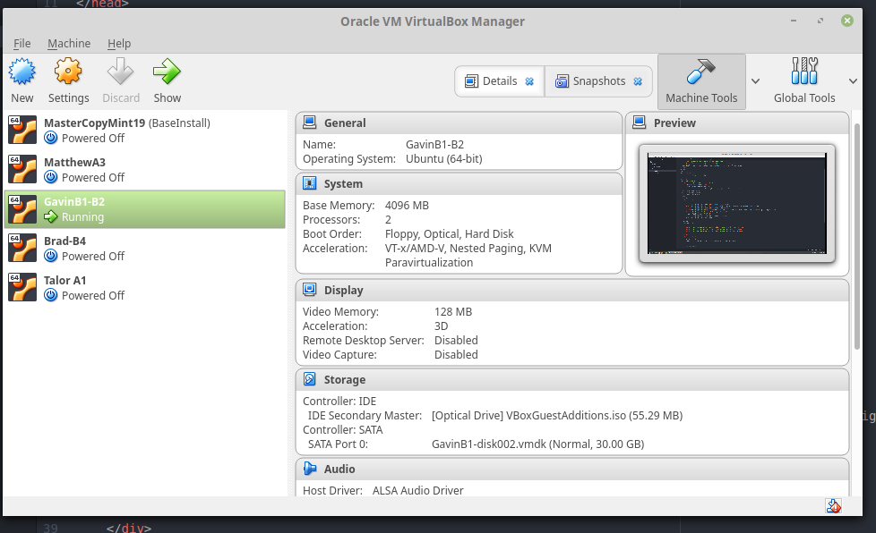
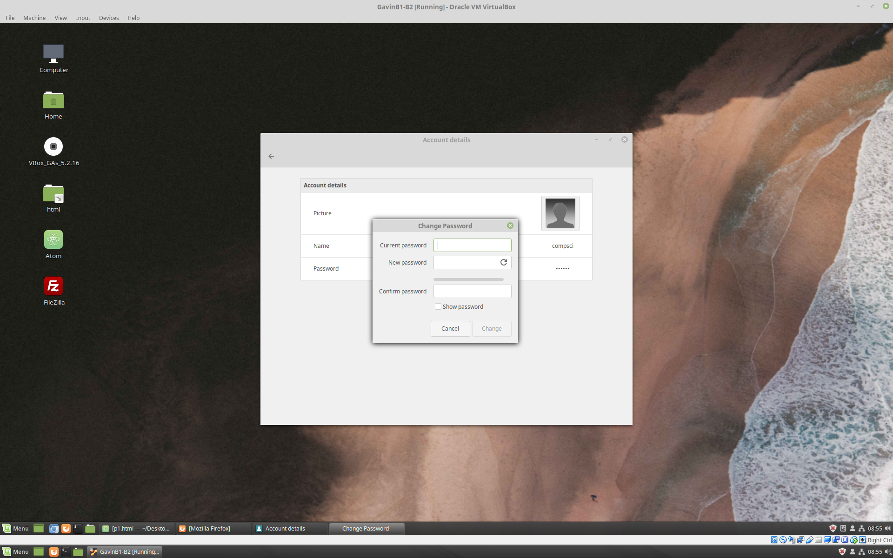
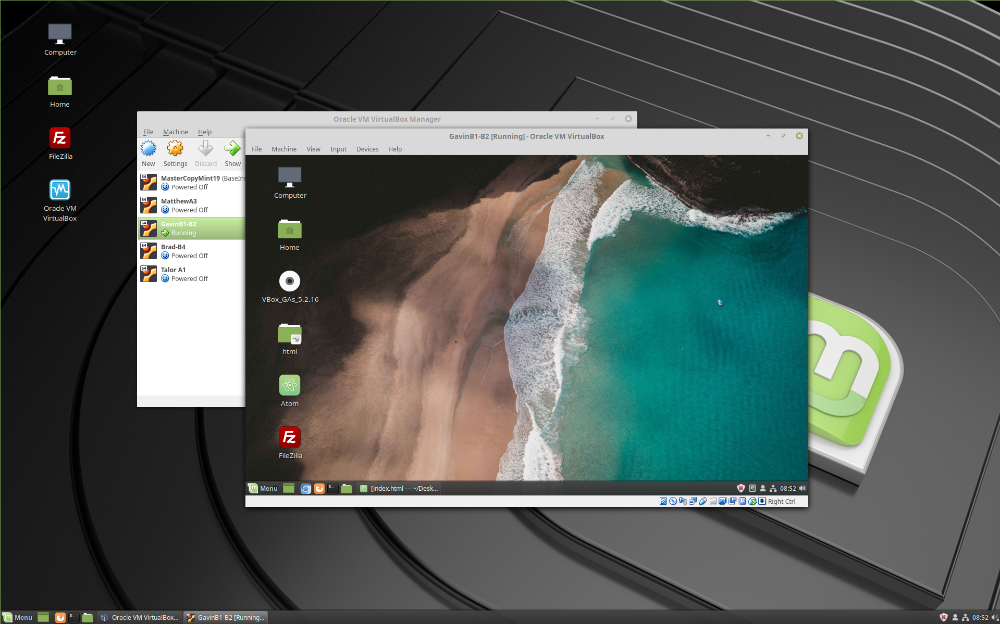

Step 1.
Select the master VM, right click, and click "clone"
Go through all the default install options under "clone"

Step 2.
Now you should have a working VM
Highlight the VM and rename it to whatever you'd like, then click "start"

Step 3.
Once you're in your VM, go ahead and change the password to prevent others from logging in and accessing your data
You can also personalize it making it your very own unique VM!

Step 4.
All done! Enjoy your new VM!
